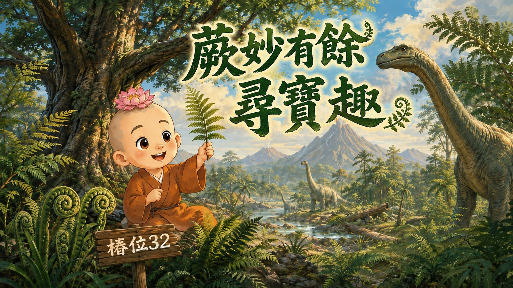
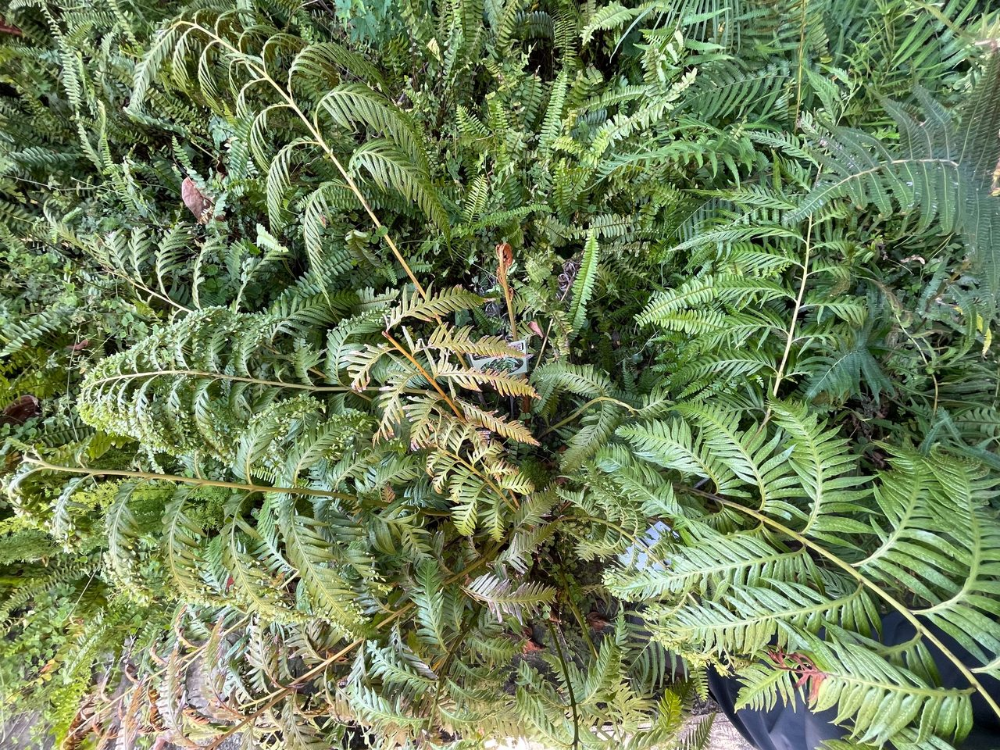
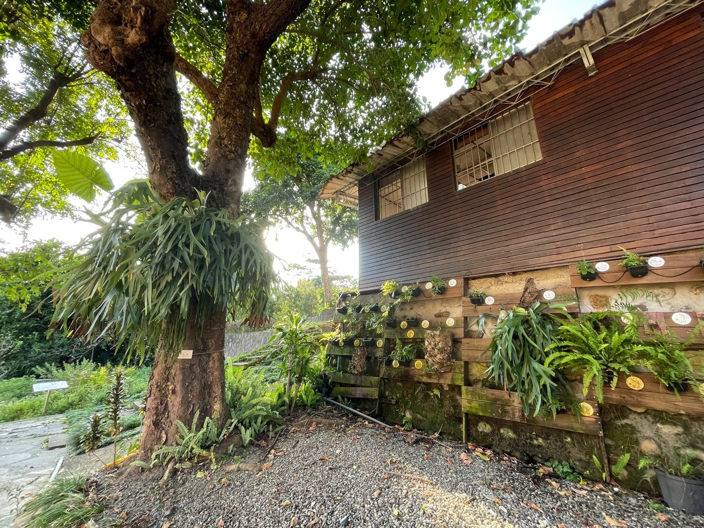
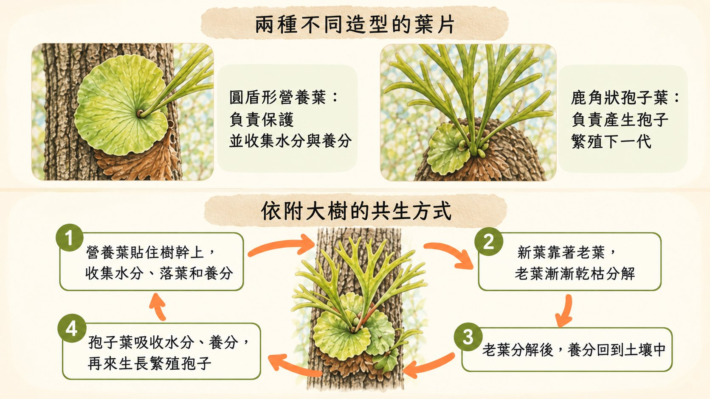
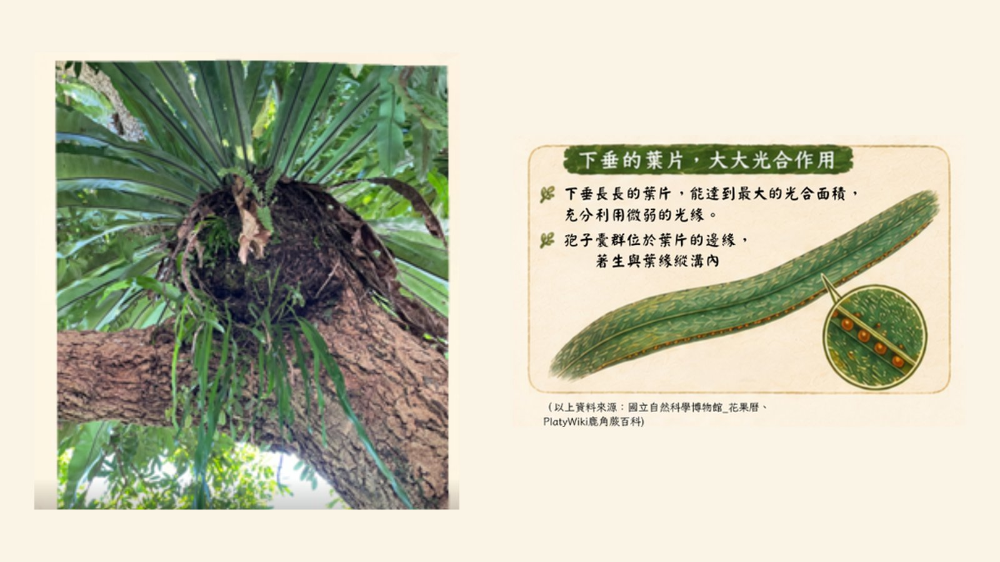

他的葉子非常大型，可達二至三公尺長，喜歡生長在潮濕的環境。
👀 請睜大眼睛，四周找找看東方狗脊蕨在哪裏？

看看東方狗脊蕨的葉子，你覺得它像：
請仔細觀察它葉片有整齊排列的孢子，還有葉片表面長出小小的「不定芽」，不定芽掉落在潮濕的環境會長出新的植株。
請畫出東方狗脊蕨葉片和「不定芽」的形貌。
請看到小石子平台上種植一叢海岸擬葦蕨，它的葉子上有很明顯的小圓點是什麼？
摸一摸，海岸擬葦蕨葉片的質感，是柔柔軟軟的，還是粗粗厚厚的呢？
💡 蓮花童子將葉片翻到背面仔細看一看，結果他發現了海岸擬葦蕨的小秘密！你發現孢子的藏身處了嗎？原來這些小圓點就是孢子囊啊！真是大自然的奇妙設計！
因為一般的蕨類多生長在陰暗潮濕的地方，海岸擬葦蕨卻是個例外，喜歡陽光充足的海邊，是少數喜歡過「望海的日子」的蕨類植物之一。為了適應濱海環境，它的葉片角質層比其他的蕨類更發達，藉此來保持體內珍貴的水分喔！
(以上資料來源：國立自然科學博物館_花果曆)
蓮花童子從海岸擬葦蕨向前走七步，來到一棵陰涼的茄冬大樹下……
此刻他站在樹下，安靜10秒鐘……
請你跟隨蓮花童子這麼做，你聽見了什麼聲音呢？
蓮花童子：「羊爺爺來了！」

請抬頭仰望茄冬大樹，然後展開你的雙臂抱抱大樹，感受手掌摸樹的感覺。
你想跟茄冬大樹說甚麼話？或者問他一個問題。

找找看，二歧鹿角蕨的孢子囊群分布在哪裡呢？
垂葉書帶蕨生長在鹿角蕨的下方，陽光沒有那麼充足，它依靠甚麼方式來獲得生長所需的營養呢？

垂葉書帶蕨通常生長在樹幹上，長在鹿角蕨植物（例如山蘇花）的下方，葉片細長而垂掛的外形，象徵著「在森林裡的謙遜與智慧的自在」。
蓮花童子看完故事，跟羊爺爺道謝，開心滿足地走向前方的現蝶園。
您已成功解鎖【樁位 32：蕨妙有餘】專屬通關徽章！
恭喜完成本站！